Inline 77-node graph Action: Run all cells in a fresh Python kernel Expected: Real Mojo state reports 77 nodes and 254 links; kernel roundtrip acknowledged
initial · browser · 1600 × 1200 pixels
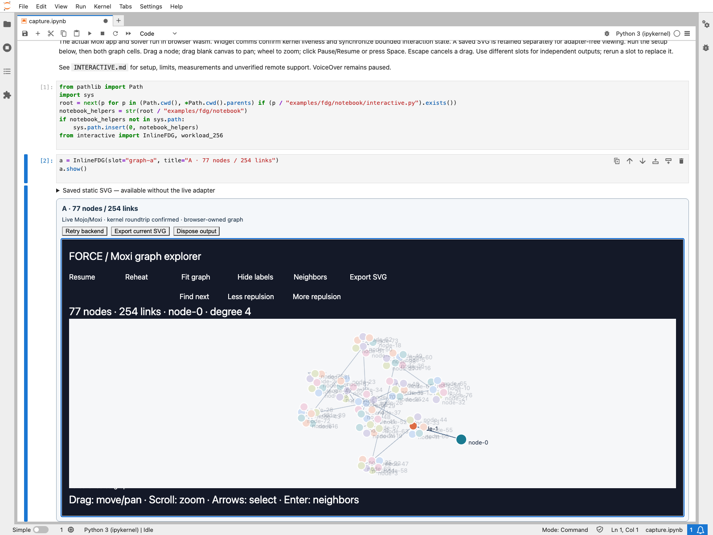
Drag held before release Action: Press a real graph node and move the mouse while held Expected: Selection changes and the actual Mojo node is pinned at the dragged location
interaction · browser · 1600 × 1200 pixels
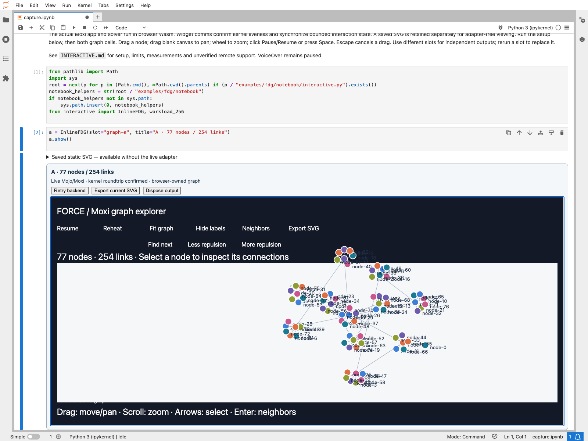
Pan, zoom and pause Action: Release, pan blank canvas, wheel, Resume then Pause Expected: Actual Moxi pan and zoom changed; solver is paused; output B remains independent
result · browser · 1600 × 1200 pixels
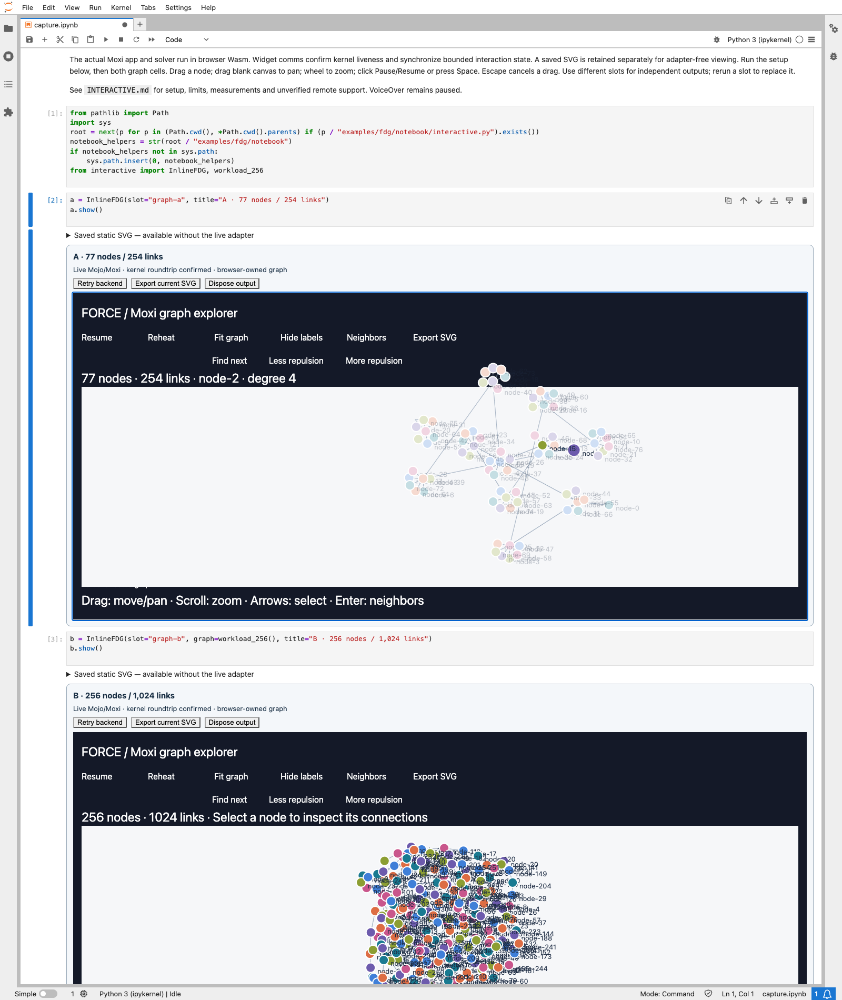
Two independent notebook outputs Action: Use a taller viewport to inspect both cells Expected: 77/254 and 256/1024 graph states coexist
result · browser · 1600 × 1900 pixels
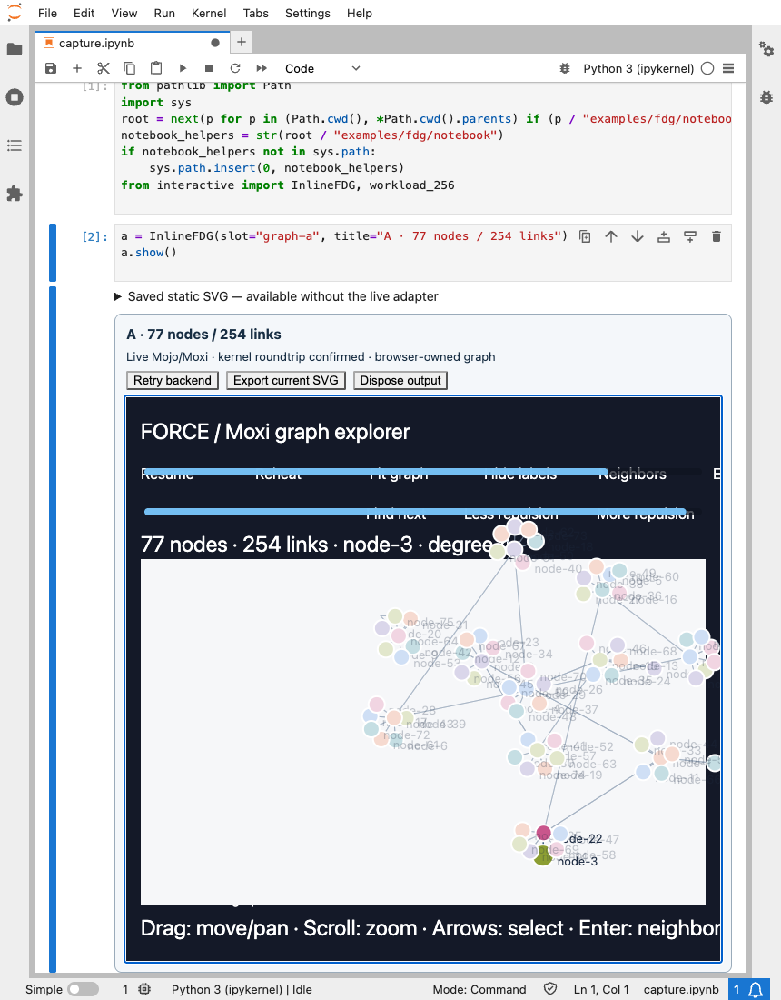
Narrow layout and hit testing Action: Resize to 860 CSS pixels and select a known node Expected: Selection agrees with the actual resized Mojo scene
interaction · browser · 860 × 1100 pixels
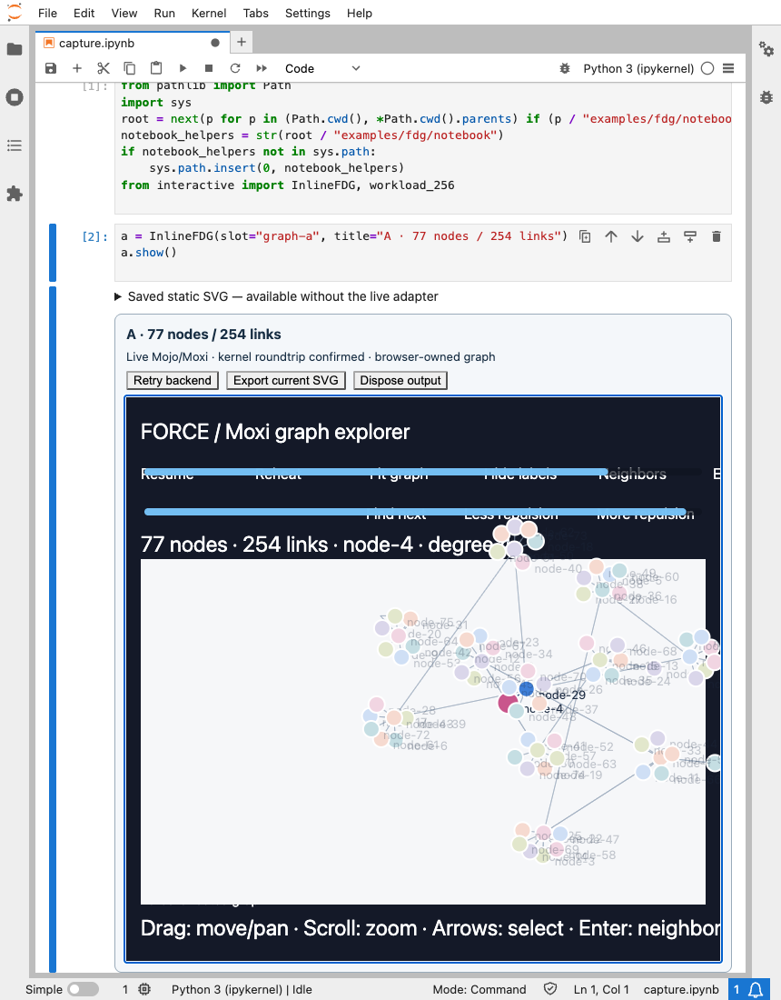
Device scale 2 Action: Set Chromium DPR 2 and select another node Expected: Physical screenshot dimensions double; CSS hit testing still selects the intended node
result · browser · 860 × 1100 pixels
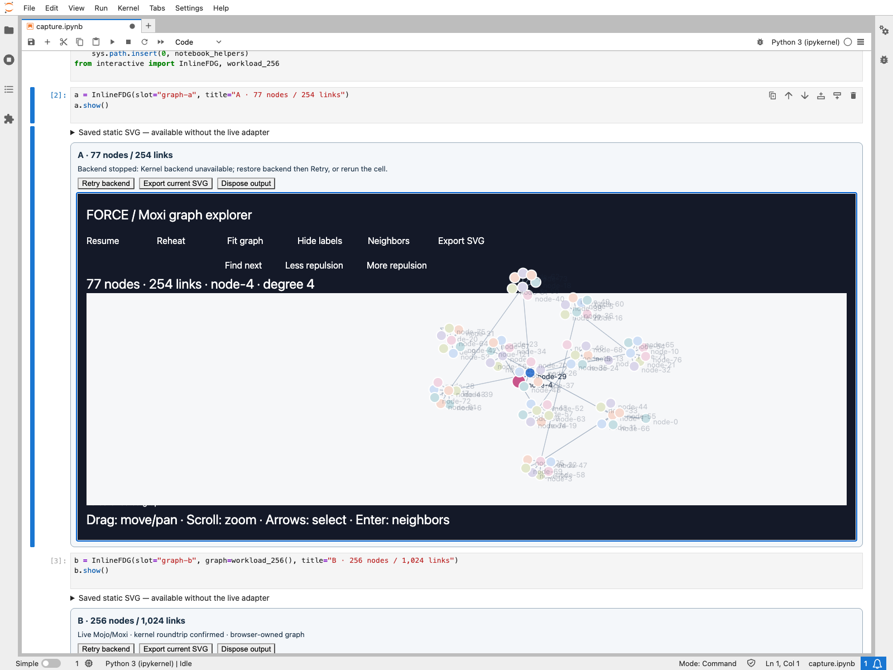
Actual kernel backend rejection Action: Set a.set_backend_available(False) Expected: A shows a visible error and releases runtime resources; B remains live
recovery · browser · 1600 × 1200 pixels
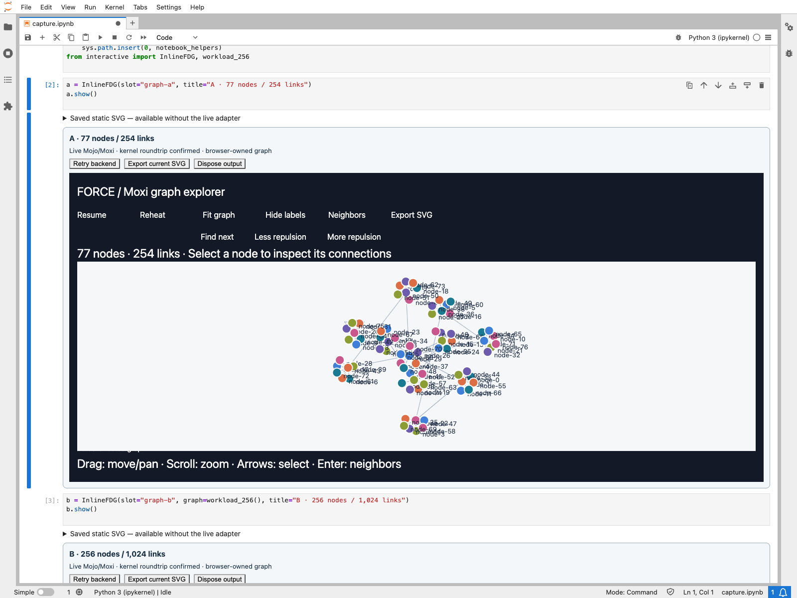
Backend restored Action: Restore backend availability and click Retry Expected: A confirms a new roundtrip and recreates a settled real graph
result · browser · 1600 × 1200 pixels
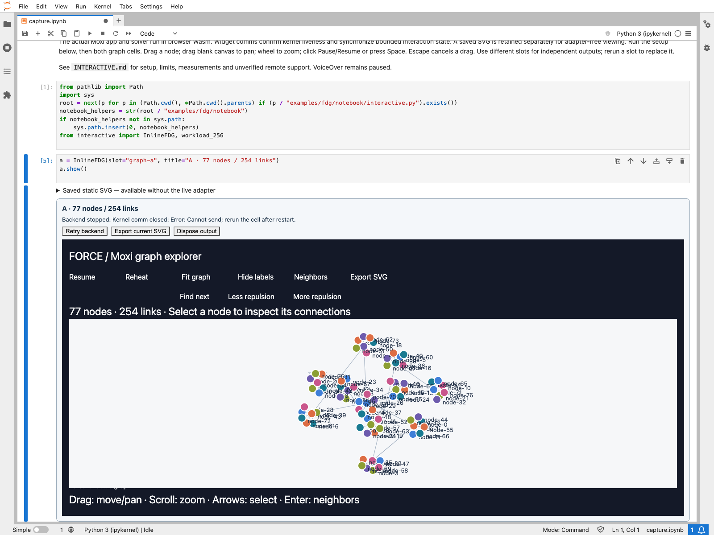
Kernel restart stops old outputs Action: Restart the actual kernel without rerunning cells Expected: Old outputs stop and release runtime resources; PID changes
recovery · browser · 1600 × 1200 pixels
Rerun in the new kernel Action: Run all cells after restart Expected: Both outputs reconstruct and acknowledge new sessions
result · browser · 1600 × 1200 pixels
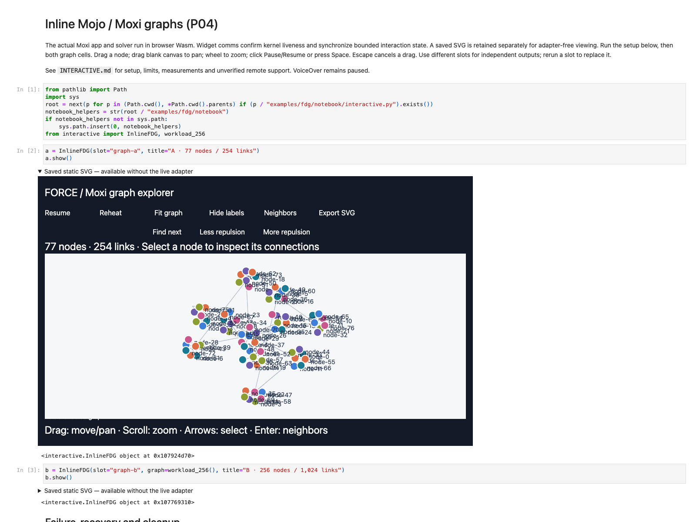
Saved notebook without adapter/network Action: Export the executed notebook normally; open offline and expand saved SVG Expected: Real saved SVG displays without live widget elements
recovery · browser · 1600 × 1200 pixels
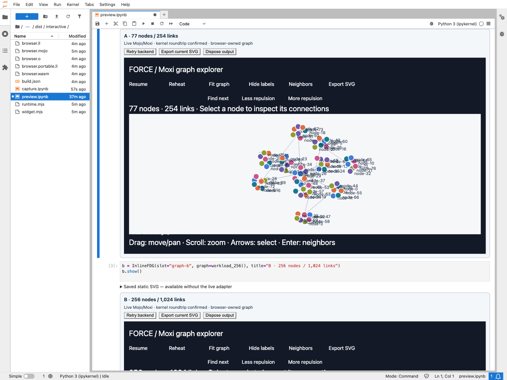
T3 collaborative preview: real Jupyter output Action: Run three notebook code cells through the T3 collaborative preview; click the actual Mojo node 0 at its measured projected position. Expected: Two live outputs report 77/254 and 256/1024; node 0 becomes selected and is released, while output B remains unselected.
initial · browser · 1280 × 960 pixels
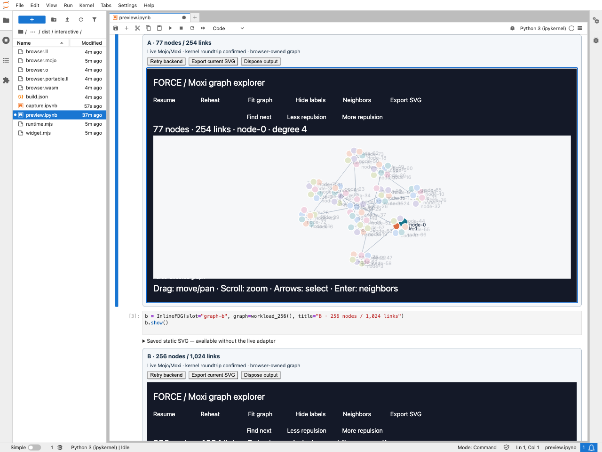
T3 collaborative preview: real node selection Action: Run three notebook code cells through the T3 collaborative preview; click the actual Mojo node 0 at its measured projected position. Expected: Two live outputs report 77/254 and 256/1024; node 0 becomes selected and is released, while output B remains unselected.
interaction · browser · 1280 × 960 pixels
Contact sheetReproduce
Follow examples/fdg/notebook/INTERACTIVE.md: build P01, prepare_interactive.py, run check_interactive.py and check_channel.mjs, capture_interactive.py, then gallery_inline.py. Optional dependencies isolated. See evidence.json for exact versions and source hashes.
P04 local browser-owned actual Moxi graph with kernel comms, drag/pan/pause, isolated outputs, resize/DPR, failure/recovery, kernel restart and saved fallback. Remote gate remains unverified.
Screenshots show recorded states. They do not establish latency, scientific accuracy, physical IME, screen-reader behavior, or human usability.